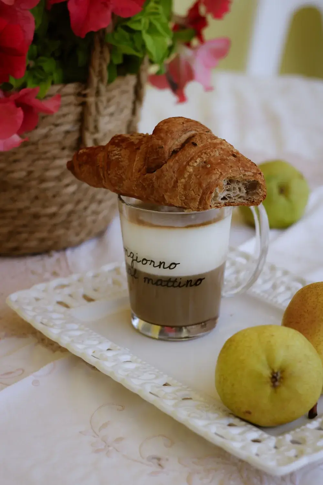

KAPCSOLAT / NYITVATARTÁS
Találkozunk reggel Hajnalban.
A Hajnal egy csendes belvárosi utca sarkán vár, tizenkét ülőhellyel és friss reggelivel.

01 / ITT TALÁLSZ
A Hajnal a kis pékség a sarkon.
Hajnalzug utca 2.
A Kovász köz sarkán, Pécs
A cím fiktív, a vizsgaprojekt része. Élő térképes útvonalat ezért ezen a bemutató oldalon nem adunk.
NYITVATARTÁS
Kedd–Szombat7:00–14:00
Vasárnap–HétfőZárva
02 / KÉRDÉSED VAN?
Írj nekünk.
Workshopról vagy a kínálatról kérdeznél? Küldd el az üzeneted.